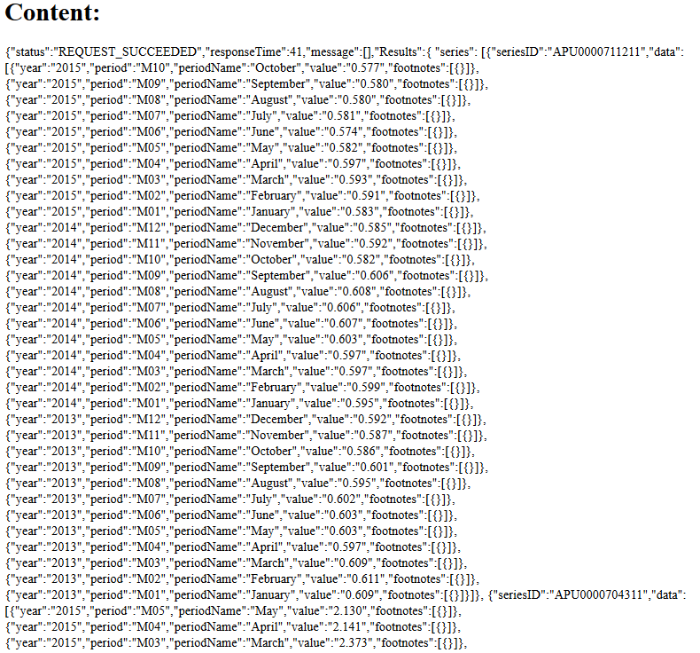

Requests for multiple series is similar to requests for single series. It requires an HTTP type, a RESTful URL and series IDs. However, HTTP type for multiple series is POST. Just as a reminder, for single series it is GET. URL for a single series has the format:http://api.bls.gov/publicAPI/v1/timeseries/data. Series IDs will be specified as JSON playload.
Lets review the example. We will be requesting Average Price Data of all U.S. cities for two different products for the same period. We will find out the average price for "Bananas, per lb." and "Ham, rump or shank half, bone-in, smoked, per lb.".
app.get('/',function(req,res,next){
var context = {};
request({"url":"http://api.bls.gov/publicAPI/v1/timeseries/data/",
"method":"POST",
"headers":{"Content-Type":"application/json"},
"body":'{"seriesid":["APU0000704311", "APU0000711211"]}'},
function(err, response, body){
if(!err && response.statusCode < 400){
context.results = body;
res.render('test',context);
} else {
if(response){
console.log(response.statusCode);
}
next(err);
}
});
});We are making a request with the JSON object instead of a single URL. In JSON object, we are including two series IDs APU0000704311 and APU0000711211:
{"url":"http://api.bls.gov/publicAPI/v1/timeseries/data/",
"method":"POST",
"headers":{"Content-Type":"application/json"},
"body":'{"seriesid":["APU0000704311", "APU0000711211"]}'}The output is quite lengthy. Thus, we only display the part that you can see which includes data for two series:
We see that the response includes the following data for bananas and ham:
yearperiodperiodNamevaluefootnotesSo far, we have seen response data for the past three years. In the next section, we see how to request data for a certain year or years.
Prev Next